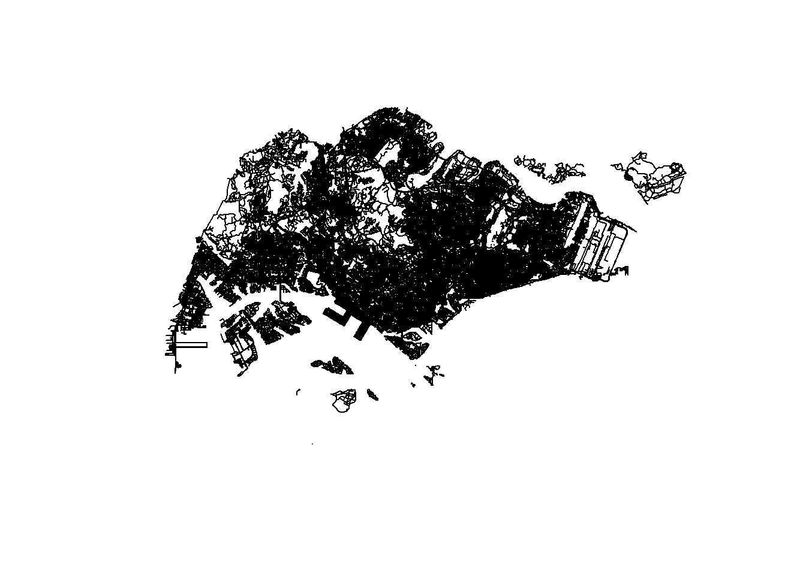

pacman::p_load(sf, spatstat, raster, maptools, tmap, tidyverse, arrow)Take-Home Exercise 1: Application of Spatial Point Patterns Analysis to discover the geographical distribution of Grab hailing services in Singapore
Background
With the growing of smart cities all over the world, it is important for the government to be able to know the movement of the people and see what they can do to make the lives of the people better. This requires data of the human mobility to know where people are moving from and to. As now we have the advancement of Information and Communication Technologies (ICT) like smart phones, smart watches, and GPS devices, we can acquire large volumes of data relating to human mobility. With this, we can better examine the movement of the people in the city and better plan and manage the architecture and services provided in the smart city.
In this Take Home exercise, we will be applying appropriate spatial point patterns analysis methods to discover the geographical and spatio-temporal distribution of Grab hailing services locations in Singapore.
Import
Packages
sf - allows import, management, manipulation, analysis and processing of vector-based geospatial in R
spatstat - offers a comprehensive set of tools for statistical analysis of spatial point patterns, will be used to perform 1st and 2nd-order spatial point patterns analysis and derive kernel density estimation (KDE) layer
raster - reads, writes, manipulates, analyses and model for gridded spatial data, used to convert image output generate by spatstat into raster format
maptools - provides a set of tools for manipulating geographic data, mainly use to convert spatial objects into ppp format of spatstat
tmap - provides functions for plotting cartographic quality static point patterns maps or interactive maps by using leaflet API
readr - for fast and efficient reading of rectangular data files
tidyr - to easily reshape and tidy data, including functions for pivoting and gathering columns
dplyr - useful for data manipulation, providing functions for filtering, summarizing, and transforming data frames
arrow - enables efficient data interchange between different systems and languages by standardizing how data is represented in memory
Aspatial Data
- Grab-Posisi - a dataset of Grab taxi location points
grab <- open_dataset("data/aspatial/GrabPosisi") |> as_tibble()
grab# A tibble: 30,329,685 × 9
trj_id driving_mode osname pingtimestamp rawlat rawlng speed bearing accuracy
<chr> <chr> <chr> <int> <dbl> <dbl> <dbl> <int> <dbl>
1 70014 car andro… 1554943236 1.34 104. 18.9 248 3.9
2 73573 car andro… 1555582623 1.32 104. 17.7 44 4
3 75567 car andro… 1555141026 1.33 104. 14.0 34 3.9
4 1410 car andro… 1555731693 1.26 104. 13.0 181 4
5 4354 car andro… 1555584497 1.28 104. 14.8 93 3.9
6 32630 car andro… 1555395258 1.30 104. 23.2 73 3.9
7 64631 car andro… 1554768955 1.35 104. 0 82 3
8 76484 car andro… 1554783532 1.34 104. 3.98 321 3.65
9 65747 car ios 1554898418 1.29 104. 4.68 324 50
10 60478 car ios 1555593189 1.33 104. 16.5 31 16
# ℹ 30,329,675 more rowsGeospatial Data
- Road data set from OpenStreetMap (Malaysia, Singapore, and Brunei coverage)
road <- st_read(dsn = "data/geospatial/malaysia-singapore-brunei-latest-free.shp", layer = "gis_osm_roads_free_1")Reading layer `gis_osm_roads_free_1' from data source
`C:\emilyaurelia\IS415-GAA\Take-home_Ex\Take-home_Ex01\data\geospatial\malaysia-singapore-brunei-latest-free.shp'
using driver `ESRI Shapefile'
Simple feature collection with 1759836 features and 10 fields
Geometry type: LINESTRING
Dimension: XY
Bounding box: xmin: 99.66041 ymin: 0.8021131 xmax: 119.2601 ymax: 7.514393
Geodetic CRS: WGS 84mpsz2019 <- st_read("data/geospatial/MasterPlan2019SubzoneBoundaryNoSeaGEOJSON.geojson")Reading layer `MasterPlan2019SubzoneBoundaryNoSeaGEOJSON' from data source
`C:\emilyaurelia\IS415-GAA\Take-home_Ex\Take-home_Ex01\data\geospatial\MasterPlan2019SubzoneBoundaryNoSeaGEOJSON.geojson'
using driver `GeoJSON'
Simple feature collection with 332 features and 2 fields
Geometry type: MULTIPOLYGON
Dimension: XY, XYZ
Bounding box: xmin: 103.6057 ymin: 1.158699 xmax: 104.0885 ymax: 1.470775
z_range: zmin: 0 zmax: 0
Geodetic CRS: WGS 84Data Preprocessing
Aspatial Data
Geospatial Data
Check the projection layers of the Road and the Master Plan 2019 Subzone Boundary
st_crs(road)Coordinate Reference System:
User input: WGS 84
wkt:
GEOGCRS["WGS 84",
DATUM["World Geodetic System 1984",
ELLIPSOID["WGS 84",6378137,298.257223563,
LENGTHUNIT["metre",1]]],
PRIMEM["Greenwich",0,
ANGLEUNIT["degree",0.0174532925199433]],
CS[ellipsoidal,2],
AXIS["latitude",north,
ORDER[1],
ANGLEUNIT["degree",0.0174532925199433]],
AXIS["longitude",east,
ORDER[2],
ANGLEUNIT["degree",0.0174532925199433]],
ID["EPSG",4326]]st_crs(mpsz2019)Coordinate Reference System:
User input: WGS 84
wkt:
GEOGCRS["WGS 84",
DATUM["World Geodetic System 1984",
ELLIPSOID["WGS 84",6378137,298.257223563,
LENGTHUNIT["metre",1]]],
PRIMEM["Greenwich",0,
ANGLEUNIT["degree",0.0174532925199433]],
CS[ellipsoidal,2],
AXIS["geodetic latitude (Lat)",north,
ORDER[1],
ANGLEUNIT["degree",0.0174532925199433]],
AXIS["geodetic longitude (Lon)",east,
ORDER[2],
ANGLEUNIT["degree",0.0174532925199433]],
ID["EPSG",4326]]From the result of the code above, we can see that both of the data have the same projection, which is WGS 84 with the CRS of EPSG 4326.
mpsz_new <- st_set_crs(mpsz2019, 3414)
road_new <- st_set_crs(road, 3414)
sg_boundary <- st_union(mpsz_new)sg_road <- st_filter(road_new, sg_boundary, .pred = st_intersects)
plot(sg_road["geometry"])
saveRDS(sg_road, file = "sg_road.rds")